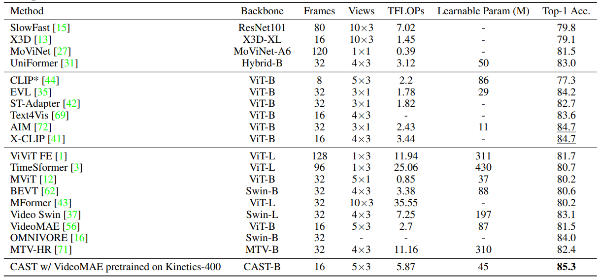

Recognizing human actions in videos requires spatial and temporal understanding.
Most existing action recognition models lack a balanced spatio-temporal understanding of videos.
In this work, we propose a novel two-stream architecture, called Cross-Attention in Space and Time
(CAST), that achieves a balanced spatio-temporal understanding of videos using only RGB input.
Our proposed bottleneck cross-attention mechanism enables the spatial and temporal expert models to
exchange information and make synergistic predictions, leading to improved performance.
We validate the proposed method with extensive experiments on public benchmarks with different
characteristics: EPIC-KITCHENS-100, Something-Something-V2, and Kinetics-400.
Our method consistently shows favorable performance across these datasets, while the performance of
existing methods fluctuates depending on the dataset characteristics.
Introduction
The importance of spatio-temporal understanding.
To accurately recognize human actions in videos, a model must understand both the spatial and temporal
contexts. A model that lacks fine-grained spatial understanding is likely to fail in predicting the correct
action.
a model that understands temporal context such as hand motion across frames but not the fine-grained spatial
context may confuse whether an object in the hand a ketchup, or a cheese, or a Milk
carton
Consequently, the model fails to predict the correct action, Put down a cheese. Similarly, a
model that lacks temporal context understanding may also fail to predict the correct action.
Let us suppose a model understands spatial context but does not understand temporal
context, e.g.,the model is confused about whether the hand is moving from outside the fridge to the
inside or
vice versa. Then the model fails to predict the correct action of Take out a sauce. Therefore, for
accurate action recognition, models need to comprehend both the spatial and temporal contexts of videos.
High-level illustration of the proposed method.
we show a high-level illustration of the proposed method. Our architecture employs two expert models - a
spatial expert model and a temporal expert
model - which exchange information to make a synergistic
collective prediction.
Initially, the experts may predict incorrect actions due to the lack of information. For example, the
temporal expert may predict reach out to something while the ground truth is Pick up a fork. Similarly,
the spatial expert may predict utensil holder instead of fork in the shallower layers. However, after
using cross-attention to exchange information multiple times, the proposed method can collectively
predict the correct action Pick up a fork. Best viewed with zoom and color
Method
Overview of CAST.
We introduce CAST, a method for balanced spatio-temporal representation learning for action recognition, as
shown in Figure. We employ frozen spatial and temporal expert models that can be any
vision transformer, consisting of 12 transformer blocks each. To facilitate information exchange between the
experts, we introduce the bottleneck cross-attention in space and time (B-CAST) module on top of the frozen
layers. This module enables the experts to exchange information and learn more balanced spatio-temporal
contexts than separate experts. To improve adaptation to downstream tasks, we use adapter layers with a
small number of learnable parameters, following AIM[1].
Results
Comparison with the state-of-the-arts on the EPIC-Kitchens-100 dataset. Comparison with the state-of-the-arts on the Kinetics400 dataset.

Comparison with the state-of-the-arts on the Something-Something-V2 dataset.Qualitative examples from EK100 comparing CLIP, VideoMAE, and the proposed
CAST.
Download
Citation
@article{cast,
title={CAST: Cross-Attention in Space and Time for Video Action Recognition},
author={Lee, Dongho and Lee, Jongseo and Choi, Jinwoo},
booktitle={NeurIPS},
year={2023}
}
References
[1] Yang, Taojiannan, et al. "AIM: Adapting Image Models for Efficient Video Action Recognition." The Eleventh International Conference on Learning Representations. 2022.